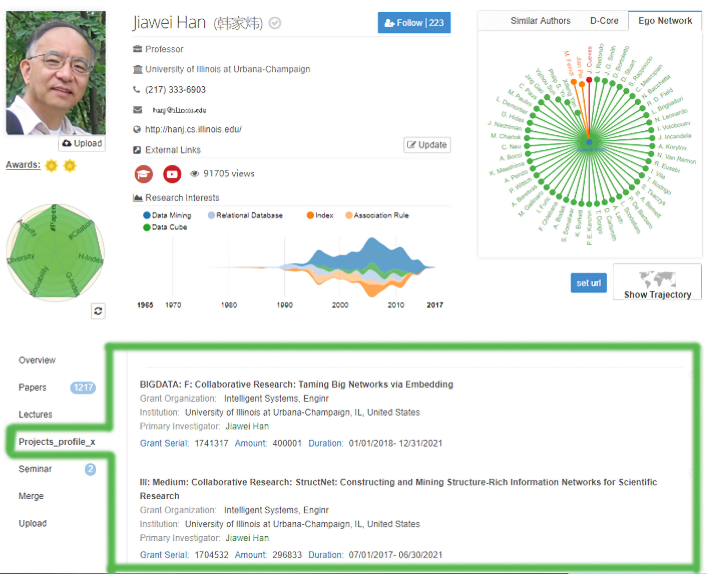

• Zhipu AI (Tsinghua University), Beijing, China. 2018.3-2018.9
|  | Adaptively collected heterogeneous funding and matched to scholars with decision tree (Aminer Online). | |||
 |
Predicted technology evolution with genetically clustering. [Code] |